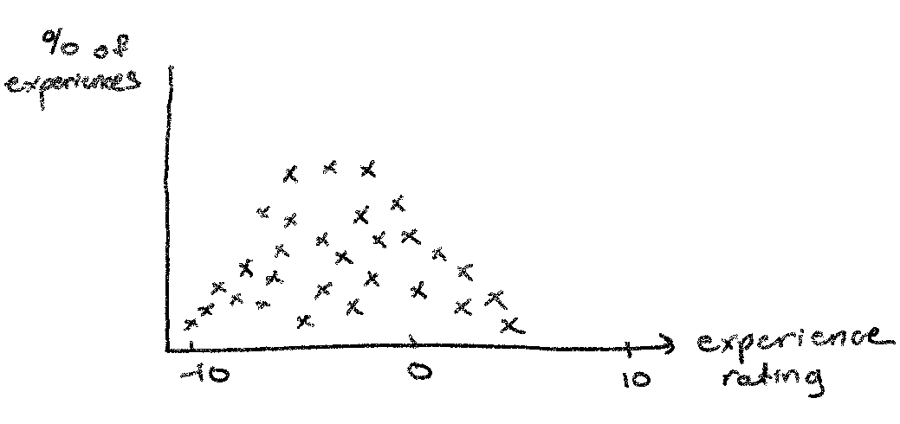
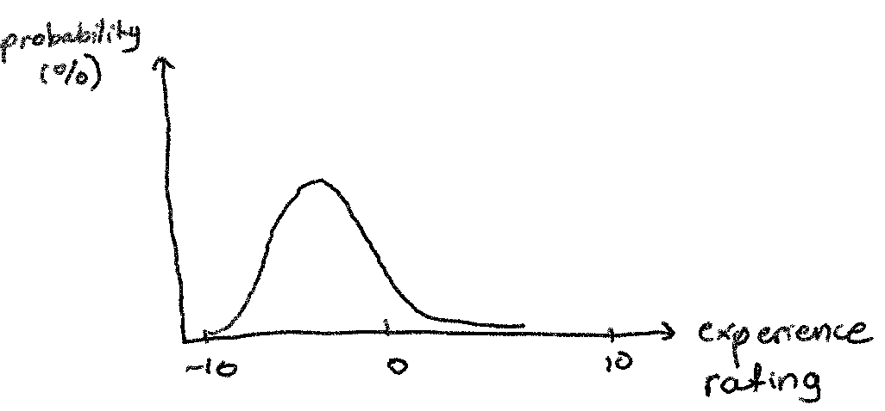

You are in pain.
Some days you feel okay, occasionally you feel very good, dangerously good, but most days you feel very sad. This sadness is a physical, full-body feeling, accompanied by psychic misery. You can remember feeling this way even when you were very young.
You do your best anyway. You study and get good grades. You work out, eat healthy, and get 8 hours of sleep. You try not to drink so much. You try not to think negatively about yourself. You try to find things to enjoy, even though you don’t enjoy much at all. You try to be nice to people and often fail at it. You try to socialize, but these interactions don’t feel very good. You don’t feel connected to any of these people, every conversation feels like a chore, and when you’re with others, you feel you’d rather be alone, even though that doesn’t feel very good either. It takes so much effort to pretend to smile, joke, and get along, and you wonder if it’s worth it.
You wonder if any of this is worth it, if any of life’s benefits outweigh the costs. This is all so painful, and what exactly are you getting out of it? Is there anything on this planet that you treasure? If you were a small business, and you had more expenses than revenue, wouldn’t you shut down? If you were playing poker and you were dealt a bad hand, wouldn’t you be inclined to fold? If you were losing tons of money at a casino, wouldn’t anyone who cared about you try to politely cut you off?
Suddenly, it dawns on you. You think, “It really is quite simple to kill myself.” What caused this thought? Nothing in particular. Just the compound effects of misery, you guess. You know that most people don’t think suicide is simple at all and are horrified and grossed out by the mention of it. But you begin to be more than a little enthralled by the idea of a bullet to the head, how quickly all of this can be over. The act, once shrouded by mystery and horror, now becomes clearer and more vivid in your mind, and it no longer seems as unreasonable or insane as other people seem to think it is.
Maybe you’re crazy. You feel crazy. Some days you’re so sad you can’t sleep. When you do go to sleep, you have awful dreams, and, when you wake up, it feel like you haven’t slept at all. After thinking about killing yourself all day and all night for a couple months, you make a shoddy attempt to hang yourself, and after you can’t find anything to support the weight of your body via the rope you bought from Home Depot, you think, “Well, maybe I ought to go to the hospital.” What you really wanted was the bullet, not the rope, anyways.
So you go to the hospital and you get on meds, several of them, and you see a therapist consistently. You keep your appointments faithfully and try to keep an open mind. But the Thought never goes away. You say it did, but it didn’t. (You don’t want to get locked up again.) You think about killing yourself all the time, but you’re being patient. You’re responsible and not impulsive, and you really do see some improvements from the medications (not from therapy. “Useless,” you think. And not enough. “I feel like shit,” you think). You’re giving it a fair go.
Yet the question of whether it’s worth it to live and whether suicide is a valid option is getting more and more urgent. You can only be patient for so long before it’s time to apply for a gun permit and do things your way. Now, objectively, you know that you are by no means “at the end of your rope.” You’re only 22, there are more medications to try, people to meet, and life paths to take. But you’re thinking, “I don’t know how much more I’ve got left in the tank. You’re thinking, “What would it take to make me want to live?” You come up empty.
Has this ever happened to you?, the advertisement on your browser asks you. My picture appears on your screen. Fancy suit. I look to you like the ambulance-chaser type. Are you wondering how to explain your choice to stop your body from working? Do you need help trying to convince people that you’re being reasonable? I’m here to help. I’ll help you develop an argument to defend your choice. A suicide lawyer, you think. Just what I need. (You google me and notice I don’t have a lot of reviews, but that’s because, one way or another, most of my past clients are in a place where they can’t access their phone.)
You decide to solicit my services. We meet at a bar. I charge you 300 dollars an hour. (My time is very valuable, and you’re not gonna need that money anyway.) Tell me your current thinking, I say.
Your Argument
Let’s think about experiences, you say. Let’s say experiences can be generally be given a decimal number between -10 and 10, -10 being very bad and +10 being very good. True love could be a 7. Guantanamo bay: a -8. (When you want Chick-fil-a on a Sunday, and it’s closed? -10)
For someone considering suicide, the plot of experiences in the past probably looks something like this:

Lot’s of bad experiences, not so many good ones. Given the sample of past experiences, we could be inclined to predict the distribution of future events will look similar.

Using data from the past, we’ve predicted, with some amount of expected error, the range of possibilities in the future. Since most experiences in the past were bad, most experiences will probably be bad in the future. Thus, life isn’t worth it. Therefore, suicide is reasonable.
Now hold on, I say. This preliminary argument of yours is decent. At the very least, it avoids the irrationality of complete hopelessness, because you admit that there is still a small probability of good experiences. By describing the future as a range of possibilities, you avoid the trap of saying things like “nothing good will ever happen to me” and “my life is surely over.” You and I both know that’s not true. It’s much more reasonable to say, “Using the proportion of bad events in the past, I can predict with some confidence the proportion of bad events in the future.” A detractor, instead of simply pointing to the ever-present possibility of good events happening, now has to do more work to pick apart your version of the future.
However, it is pretty easy to pick apart your version of the future. For one, experiences are not entirely random. With considerable effort, you can shape your own experiences, for better or for worse. Moreover, each experience isn’t entirely independent of other experiences. You might get more bad experiences because of something bad that happened to you early on. These issues make it difficult for you to correctly make inferences from past data.
See, I don’t think it’s true that we can really predict the distribution of future events. Maybe the distribution is 50/50 and you’ve just got an unfortunate sample. Maybe we note that, as a depressed person, your recollection of past experiences might be skewed, in which case your inference would be faulty to begin with. We could also note that an Ivy League graduate like yourself has a higher probability of economic security, and thus a lower probability of bad experiences related to poverty. Or, just maybe, there’s a whole host of awful experiences awaiting you in the future - torture, demonic possessions, etc. - events so bad you can’t even imagine. How do you know? You don’t.
And do we really think we can compress the quality of experience into a single number? That just seems hopelessly naive. Experiences are wondrously complex, and not everything can be quantified, no matter how hard math majors like you try. We need more than a distribution of ratings to tell us how the totality of experiences in the future will feel. These charts and graphs are useless in this matter.
Your fundamental error here is appealing to the badness of the future to support your reasoning for suicide. You don’t know the future, and it’s much more difficult to guess than you think. Any detractor can always point out flaws in your prediction of the future and can always call you depressed and deluded for your negative outlook, and thus they can undermine your case. So, forget the future! Don’t say:
The future won’t be worth it, so I’ll kill myself now. (Statement A)
The premise of that sentence is something you don’t know is true. You should say instead:
My life isn’t and hasn’t been worth it, and I’m too tired to go on, so I’ll kill myself now. (Statement B)
The difference is subtle, but important. With statement B, you don’t have to predict the future, you only have to evaluate your life as it is and as it has been. And who can argue with you about how you feel about your life? Who can argue with you about how exhausted you are? No one knows your experiences like you do and no one but you can evaluate the truth of the premises “my life isn’t worth it and hasn’t been worth it” and “I’m too tired to go on.”
So what we have to do now is defend the idea that those two premises imply that it’s reasonable to commit suicide. This isn’t trivial. There could very well be reasons that despite these two premises, it still isn’t okay to kill yourself. We have to defeat the various objections to Statement B. It may seem like a tough task, but don’t worry, I’ll take care of it. This is what you’re paying me for.
A friend of yours has been listening in this whole time, and he’s not very pleased. He’s sitting there on the barstool, frowning. Don’t be ridiculous, he says:
Objection #1: The Argument from Ultra-good Experiences
Any reasonable person who has a normal brain and doesn’t want to die can come up with this objection almost immediately. Don’t you know the slogans? “When you’re in it, you’re in it. When you’re out, you’re out.” and “Suicide is a permanent solution to a temporary problem.” and, of course, “There is a light at the end of the tunnel.” What all of these phrases are trying to get at is that there are wonderful, perfect experiences in life that are so awesome and beautiful that they shine like a brilliant light in the darkness and can make the worst parts of life all worth it. Meeting that special person, seeing your child grow up, getting to the top of that mountain, these put all the pain and bad experiences into perspective.
Okay, maybe you’ve never had any of these experiences. Maybe you’re right and your life isn’t worth it right now. But if you kill yourself, if you press “end game,” you completely eliminate any possibility of having any of these ultra-good experiences ever. More exactly:
- There are ultra-good experiences that make life worth it
- Ultra-good experiences are possible if and only if you are alive.
- The possibility of ultra-good experiences is precious.
- By committing suicide, you lose something of significant value (the possibility of ultra-good experiences)
- It is not reasonable to do something that results in the loss of something of significant value such as this.
- Therefore, suicide is not reasonable.
I shouldn’t have hired you, you say nervously. The objection is too strong, I feel the force of it, it’s impossible to defeat, you say. No, no. Don’t worry, I say. We’ve got this. I respond:
Initial Rebuttal
If my client and I were a little disingenuous, we might be inclined to restate your argument with slightly different words and call it “The Jackpot Argument.”
- There are jackpots that allow you to make all your money back and more.
- Jackpots are possible if and only if you keep playing slots.
- The possibility of jackpots is precious.
- By leaving the slots machine, you lose something of significant value (the possibility of jackpots).
- It is not reasonable to do something that results in the loss of something of significant value such as this.
- Therefore, it’s never reasonable to leave the slots machine.
Everyone who doesn’t own a casino can see that the Jackpot Argument fails. Does this mean your argument fails? Honestly, maybe not. Maybe it’s a bit of an unfair comparison, between the slots machine and life. So since my client and I are not disingenuous, we won’t push this argument. We’ll leave it right there.
Instead, we’re going to cast doubt on step #4 of your argument: “By committing suicide, you lose something of significant value.” (“What?!” a patron at the bar exclaims, listening in. “That’s completely self-evident! Of course you lose something of significant value!”) (“What?!” you exclaim, worried. “Are you sure you know what you’re doing?!”) (“Trust me,” I whisper.) I say, While step #4 does seem unassailable at first glance, it has serious issues.
Counter Argument #1
Your argument exploits an ambiguity in the word “loses.” I readily admit that, if my client were to commit suicide, there would be an absence of the possibility of ultra-good experiences with respect to my client. (“Case closed,” your friend says. I continue.) But your argument implies that this absence would have a certain quality to it, that it would be tragic, that it would be a _loss_for my client, yes?
What turns a mere “absence” into a “loss”? In the sciences, we could talk about loss of energy, loss of stability, etc. In these cases, loss is almost synonymous with absence. It’s basically just a process by which something gets removed. But this kind of loss doesn’t have a negative quality to it, does it? It’s just a term. So that’s not the kind of loss you’re talking about in your argument.
No. What you really mean when you talk about “loss” and about “losing” is the (negative) experience of an absence that was not there before. That absence could be of a person, an object, an experience, or (in this case) a possibility of an experience. In this context, if we were to say “A loses B”, we don’t mean “A has misplaced B” or “B is simply no longer associated with A”. We mean “A has knowledge of, experiences, and thus mourns the absence B.” How else can the absence of B take on a negative quality with respect to A, except through the experience of A?
The concept of loss, which is meant to apply to living people who experience things, breaks down when it’s a dead person doing the losing. It does not make sense to say my client loses the possibility of ultra-good experiences upon his death. He could not experience the absence of such experiences, because he no longer exists. How can we add a descriptor or adjective to that absence with respect to him when it isn’t experienced by him? When a person dies and then a loved one of his dies afterwords, do we say the first dead person has lost the second? Of course not! How can we say my client has really actually lost something when the subject that would do the “losing” no longer exists?
Yes, I do admit that other people will experience the aftermath of my client’s death and they may experience the absence of the possibilities he may have contained. But let’s not get it twisted. The living can have their own experiences, but they cannot prescribe an experience for the dead. The living cannot say for my client, now dead, that he has lost certain possibilities and that this loss is tragic for him because they cannot experience those absences for him. My client, wrapped in oblivion, has lost nothing.
In review:
- Loss (in this case) is the experience of an absence that wasn’t there before
- There are no experiences after death
- Therefore, someone who commits suicide does not lose anything
I have a self-satisfied look on my face. You take a drink of water, looking relieved. Your friend looks puzzled. He can’t quite formulate a response. By now, the conversation has attracted some attention. An older gentleman, with a wisened, weathered face, chimes in. He believes he sees a chink in the armor of this argument.
You say your client won’t lose anything, the old man says to me. But, tell me, what would he gain?
Objection #2: The Argument from Lack of Gain
Allow me to turn your argument around. (The old man shifts in his seat, and you can hear his bones creaking.)
- Gain (in this case) is the experience of an presence that wasn’t there before
- There are no experiences after death
- Therefore, someone who commits suicide does not gain anything
Furthermore, we could add on:
- It isn’t reasonable to do something you wouldn’t get anything out of or do something just you won’t lose anything, especially when there are other options that would possibly allow you to gain something
- Therefore, suicide is unreasonable.
You look at me, questioningly. I smile, expecting this retort.
Counter Argument #2
Yes, yes. I’ll accept the idea that my client shouldn’t do something just because he doesn’t lose anything by doing it. Yes, my client gains nothing through suicide. But that’s exactly it, isn’t it? My client gains nothing, or nothingness rather.
My client has had a tough time living. He’s been miserable. He’s been in pain. What he sees in suicide is a chance to escape from that pain. He’s tired of pain. But he’s tired of pleasure too! He’s sick of it! He’s sick of the whole thing! He’s not seeking something more pleasurable, he’s seeking an end to the system of pleasure and pain altogether. It is the void itself that is valuable to my client. He just wants to turn the experience machine off.
The old man collapses into a pile of dust, and someone comes by with a broom. The bartender has been looking increasingly frustrated this whole time.
He says, You’ve been going about this all wrong. You’re talking all about how he’s not gonna lose anything and he wants the nothingness and everything that happens after won’t matter to him because he’ll be dead and all that. But what about the people around you, huh buddy? He says, his eyes turning to you. You don’t feel selfish at all? You’ve got your friend here trying to convince you not to kill yourself, and you’re hiding behind a .. lawyer? (Your friend is staring at you intensely.) (“I have not passed the bar,” I’m obligated to interject.) Do you not think the people who care about you are worth it enough to stick around?
Objection #3: The Argument from Harm
There are people that love your client. (You look down at the floor, not denying it.) They would be harmed if your client were to kill himself. And think of whoever has to find your body. Is that what you want?
I know that you feel miserable, but you’re not the only person that matters. In fact, if you add up all the pain that could be felt after your death, it may be more than the pain you feel now. “Reasonable” this. “Unreasonable” that. You’re going to cause harm, buddy. That’s immoral. By killing yourself, you’re proving you don’t give a shit about other people. If you want an argument, here:
- Your suicide will cause pain to other people
- If more than 4 people feel 1/4th as bad as you do now as a result of your death, you will cause more harm than the harm you reduce by killing yourself.
- It is likely that more than 4 people will feel 1/4th as bad as you do now as a result of your death
- It is immoral to do something that will likely cause net harm.
- Therefore, suicide is immoral.
Your eyes are glued to a spot on the floor you seem to find very interesting. I clear my throat.
Counter Argument #3
Moments ago I just chastised my client for trying to quantify experiences, and I’m afraid I have to do the same to you, Mr. Bartender, for trying to quantify harm. How can we even try to objectively measure or compare something so -
Suddenly, you speak up, interrupting me. Your eyebrows raise as you slowly look up to meet your friend’s eyes. You say:
Counter Argument? #3
I know it would hurt you to see me give up, but I’m not an inexhaustible resource, you say, quietly. Yes, I suppose by stating my desire to do this thing, I’m admitting that you aren’t worth it for me to stick around. I guess I’m saying that I don’t love you more than I’d love to not exist. That doesn’t make me feel good. But it’s how it is. I know this will hurt you, and I know I have a duty to keep you from harm. But I also have a duty to myself. And right now, I think the best thing for me is the end of me. If you hate me for that, well, maybe I deserve it.
Your friend sits there and doesn’t speak for a while. His face is contorted. Facial muscles that you’ve never seen before appear, stretched and pinched. “If this is what you need,” he says. “But I won’t be a part of it.” He stands and leaves. The bar is dead silent. A few moments later, you stand and leave as well. “Thanks,” you mutter to me.
“You’re welcome,” I say. “I hope I’ve helped you feel a bit more reasonable.”
“It doesn’t matter how reasonable I think I am,” you say. “I won’t be able to convince anyone in any way that matters.”
“I’m sorry you feel that way,” I respond. “Regardless, there’s.. um.. just the small matter of … you know, my fee…”